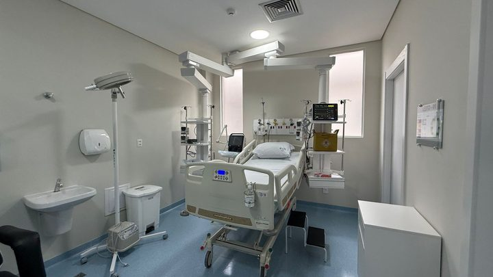
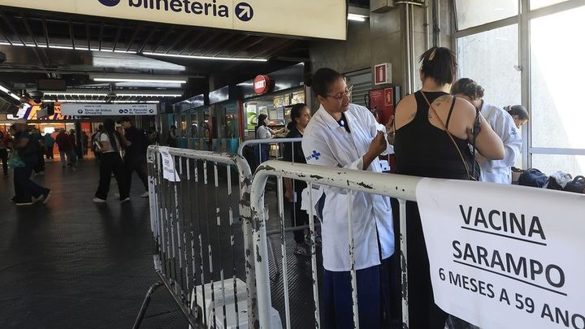

Itapema · SaúdeHospital Santo Antônio abre 10 leitos de UTI em Itapema, e o Estado banca o custeio
O que a cidade ganhou de urgência e alta complexidade nesta semana.
O medicamento dissolve o coágulo que entope a veia do coração ou do cérebro. Quanto mais cedo é aplicado, menor a chance de sequela.
Em 30 segundos · Modo de Leitura, formato original Santa Informa
O SUS vai ampliar a oferta de medicamentos trombolíticos.
Eles entram na rede de urgência: UPAs e Samu 192.
A mudança está em lei sancionada na manhã desta quarta, 2 de setembro.
O remédio dissolve o coágulo que bloqueia veia do coração ou do cérebro.
Ele é usado no infarto agudo do miocárdio e no AVC isquêmico.
Quanto mais rápido o diagnóstico, menor o risco de sequela.
O Brasil tem de 300 mil a 400 mil casos de infarto por ano.
Em 2025 foram 292 mil atendimentos por AVC, sendo 218 mil isquêmicos.
O Samu 192 fez 861 aplicações de trombolítico em 2025.
Hoje são 102 unidades do Samu habilitadas para aplicar.
A lista divulgada não traz nenhuma unidade em Santa Catarina.
Poder PúblicoPublicada em Redação Santa Informa
Existe um remédio que, aplicado nas primeiras horas, desfaz o coágulo que entupiu a veia e devolve a circulação do sangue. Ele se chama trombolítico, e até agora chegava a pouca gente fora do hospital grande. Isso muda com a lei sancionada na manhã desta quarta-feira, 2 de setembro, pelo presidente da República, que amplia a oferta do medicamento na rede de urgência e emergência do SUS, incluindo as Unidades de Pronto Atendimento e o Samu 192.
Quando um coágulo bloqueia um vaso do coração, dá infarto agudo do miocárdio. Quando bloqueia um vaso do cérebro, dá AVC isquêmico. Nos dois casos, o tecido começa a morrer por falta de sangue. O trombolítico dissolve esse coágulo e restabelece a circulação, sempre conforme avaliação clínica. Segundo o ministro da Saúde, Alexandre Padilha, a rapidez no diagnóstico e no início da terapia aumenta as chances de sobrevivência e reduz o risco de sequela.
O Brasil registra entre 300 mil e 400 mil casos de infarto por ano. Em 2025, o país teve 292 mil atendimentos por AVC, e 218 mil deles foram do tipo isquêmico, justamente o que responde ao trombolítico. No mesmo ano, o Samu 192 fez 861 aplicações do medicamento. É pouco perto do número de casos, e o motivo é simples: até aqui, poucas unidades tinham autorização para aplicar.
São 102 unidades do Samu 192 habilitadas hoje. O Ceará concentra 28, Minas Gerais tem 22, Sergipe 16, Rio Grande do Norte 13, Bahia 12, São Paulo 9 e Paraíba 2. Santa Catarina não aparece na lista divulgada. Ou seja, quem tem infarto ou AVC aqui no litoral depende de chegar rápido a um hospital com estrutura para o procedimento, e é exatamente esse gargalo que a lei quer atacar.
A região tem população idosa alta e distância real até serviço de alta complexidade. Levar o trombolítico para dentro da UPA e da ambulância significa começar o tratamento antes de o paciente chegar ao hospital de referência, e nesse tipo de emergência cada minuto conta. A sanção é o primeiro passo. O que vale acompanhar agora é a habilitação das unidades daqui, que é o que faz a lei virar atendimento na porta.
O resumo de 30 segundos está no topo e a versão completa é o texto acima. Aqui ficam as três leituras da casa sobre o mesmo assunto.
Clara, a otimista
Tirar um remédio de dentro do hospital grande e colocar dentro da ambulância e da UPA é o tipo de mudança que salva vida sem precisar construir nada novo. A estrutura já existe, o que faltava era autorização e o medicamento na prateleira.
E o efeito aparece rápido quando funciona. Menos sequela quer dizer menos gente saindo do AVC sem conseguir andar ou falar, e isso muda a vida de famílias inteiras.
Seu Prudêncio, o criterioso
Merece atenção o número que resume tudo: 861 aplicações num ano em que houve 218 mil AVCs isquêmicos. A distância entre uma coisa e outra mostra o tamanho da tarefa, e sanção de lei sozinha não fecha essa conta.
Vale acompanhar de perto a habilitação das unidades. Aplicar trombolítico exige protocolo, exame de imagem antes em boa parte dos casos e equipe treinada, porque o mesmo remédio que dissolve coágulo pode provocar sangramento. Santa Catarina não aparece na lista atual, e é isso que o leitor daqui precisa acompanhar nos próximos meses.
Feita a ressalva, o mérito é claro. Descentralizar o tratamento na rede de urgência é a decisão tecnicamente certa para doença em que o tempo é o principal fator, e colocar isso em lei dá estabilidade ao que antes dependia de portaria.
Caco, o sarcástico
Um remédio que desentope veia. Basicamente o encanador da emergência.
Ceará com 28 unidades, Santa Catarina com nenhuma na lista. Alguém aqui esqueceu de levantar a mão.
E o segredo do tratamento continua sendo chegar cedo. Ou seja: infarto também tem hora de entrada, e ninguém avisou.
Fontes: Agência Brasil, reportagem de Daniella Almeida publicada em 2 de setembro de 2026, às 15h14, de onde saem a ampliação da oferta de trombolíticos na rede de urgência do SUS, a inclusão de UPAs e do Samu 192, a sanção na manhã de 2 de setembro, a explicação sobre a ação do medicamento no infarto agudo do miocárdio e no AVC isquêmico, a fala do ministro da Saúde Alexandre Padilha sobre rapidez no diagnóstico, os 300 mil a 400 mil casos de infarto por ano, os 292 mil atendimentos por AVC em 2025 com 218 mil isquêmicos, as 861 aplicações feitas pelo Samu 192 em 2025 e a lista das 102 unidades habilitadas por estado. A imagem do topo é ilustrativa, de banco gratuito.

Itapema · SaúdeO que a cidade ganhou de urgência e alta complexidade nesta semana.

Brasil · SaúdeOutra frente do Ministério da Saúde, essa de prevenção.
Outro prazo de vaga, esse no ensino superior, com a mesma lógica de lista.